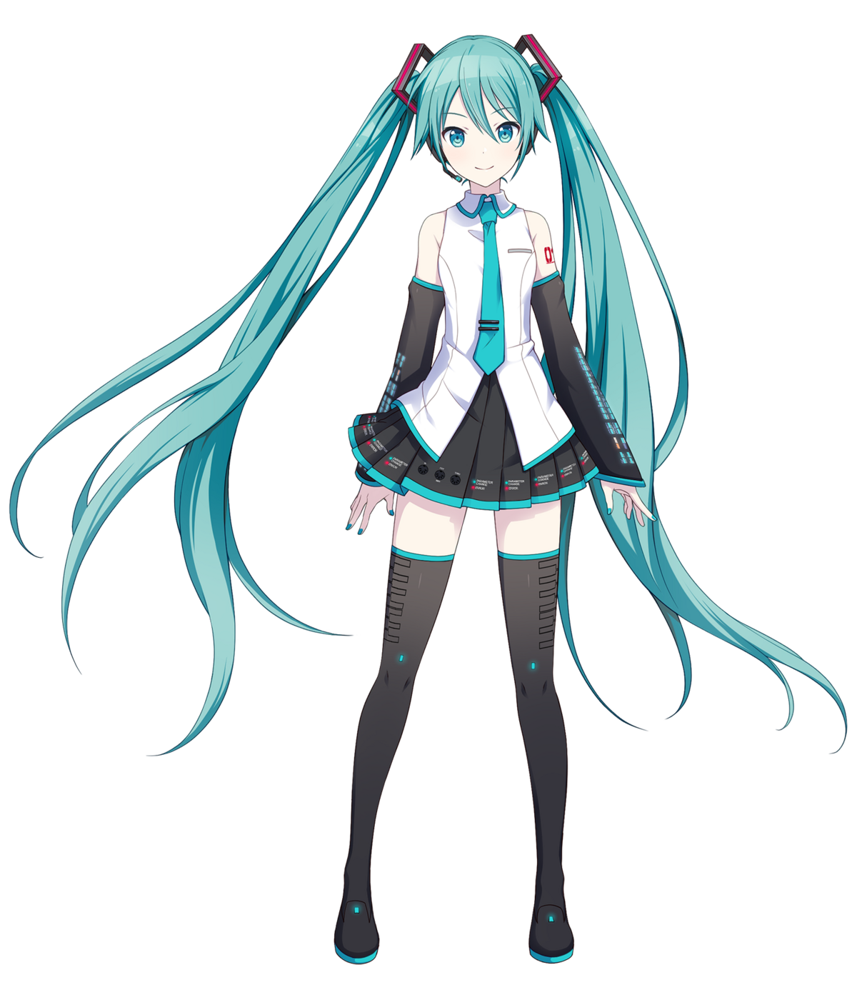
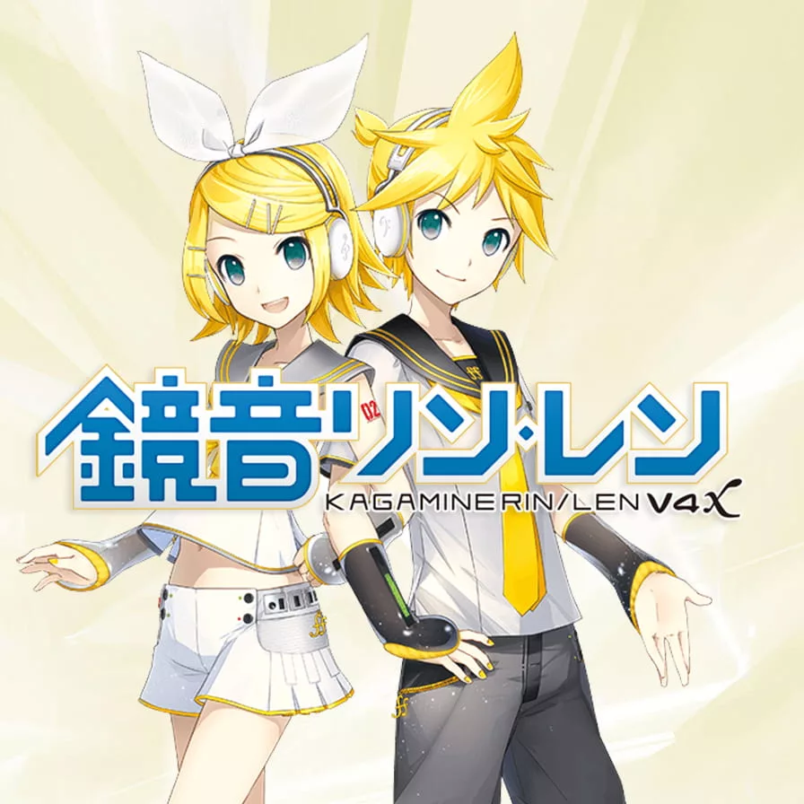
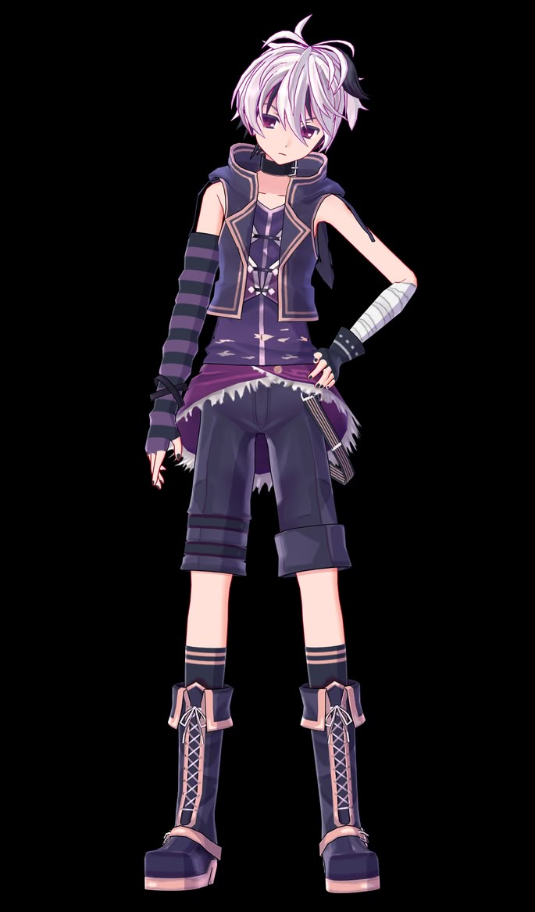

Hatsune Miku — японский антропоморфный голосовой банк программы Vocaloid. Визуализированный код находится под патронажем компании Crypton Future Media.
Исполнительница представляет собой 16-летнюю аниме-певицу ростом 158 сантиметров и весом 42 килограмма. Чаще всего она изображается неформальной школьницей с длинными бирюзовыми волосами, которые собраны в два высоких хвостика.
На счету виртуальной артистки более тысячи композиций и огромное количество коллабораций. Хацунэ сотрудничала с японской группой барабанщиков тайко — KODO, с рок-коллективом BUMP OF CHICKEN, Фарреллом Уильямсом, а также выступала на разогреве у Леди Гаги.

Kagamine Rin и Len (鏡音リン・レン) — вокалоиды, разработанные и выпущенные Crypton Future Media, Inc.. Они были выпущены в декабре 2007 года для движка VOCALOID2.
Имена персонажей говорящие: «Кагамине» состоит из двух кандзи «Кагами» (鏡) — зеркало и «Не» (音) — звук, а имена — видоизменённые английские слова «Right» и «Left».
Многие считают Рин и Лен близнецами, но информацию об этом сами Yamaha Corporation отрицают. Это именно зеркальные отражения друг друга.
Сейю обоих вокалоидов является актриса по имени Асами Симода.

Flower (フラワ) — японская вокалоид-библиотека, разработанная компанией Yamaha Corporation в сотрудничестве с Gynoid Co., Ltd.. Название продукта — v flower (ブイフラワ).
Первый релиз состоялся в мае 2014 года для двигателя VOCALOID3. В июле 2015 года вышло обновление до двигателя VOCALOID4. В апреле 2020 года выпустили речевой банк для Gynoid Talk, а в декабре 2024 года анонсировали порт этого банка для A.I.VOICE, который с марта 2025 года будет бесплатно доступен пользователям версии Gynoid Talk.
Вокал Flower считается андрогинным, то есть не имеет женских или мужских черт. Он наиболее совместим с жанрами рок-музыки и предпочитает быстрые темпы.